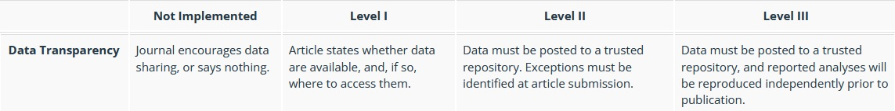

3 External Incentives II
3.1 Policies scientific societies
Examples of societies that have established a policy on open and FAIR data.
(APA, 2017; DGfE et al., 2020; Gollwitzer et al., 2021)
“Homework”: Look up the scientific society most relevant to you and check if they have a policy/recommendation/guideline on open science or sharing data. What does it say on openness, FAIRness and limitations?
3.2 Journal policies
Some journals encourage, some journals mandate a data availability statement in the manuscript.

E.g.,
- Psychological Bulletin: Data transparency Level 2
- Meta Psychology: Data transparency Level 3
- Psychological Science: Data transparency Level 1
See the TOP Factor website to search for the data transparency rating of your favorite journal.
Evidence that “Data available upon reasonable request” often does not keep its promise. Only 6.8% / 17% of data sets were acutally provided in an investigation (Gabelica et al., 2022; Hussey, 2023)
Questions to be answered at the end?
Please put them here!